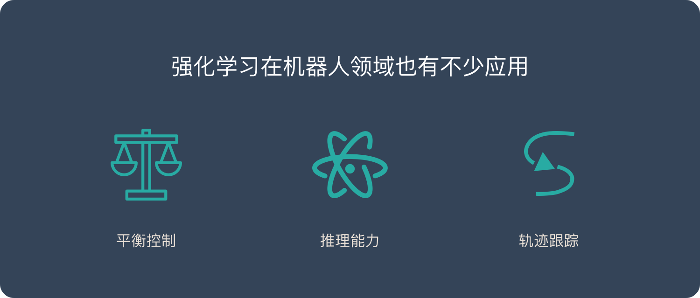

强化学习是机器学习的一种学习方式，它跟监督学习、无监督学习是对应的。下面将详细介绍强化学习的基本概念、应用场景和主流的强化学习算法及分类。
什么是强化学习？
强化学习并不是某一种特定的算法，而是一类算法的统称。
如果用来做对比的话，他跟监督学习，无监督学习 是类似的，是一种统称的学习方式。
强化学习算法的思路非常简单，以游戏为例，如果在游戏中采取某种策略可以取得较高的得分，那么就进一步「强化」这种策略，以期继续取得较好的结果。这种策略与日常生活中的各种「绩效奖励」非常类似。我们平时也常常用这样的策略来提高自己的游戏水平。
在 Flappy bird 这个游戏中，我们需要简单的点击操作来控制小鸟，躲过各种水管，飞的越远越好，因为飞的越远就能获得更高的积分奖励。
这就是一个典型的强化学习场景：
- 机器有一个明确的小鸟角色——代理
- 需要控制小鸟飞的更远——目标
- 整个游戏过程中需要躲避各种水管——环境
- 躲避水管的方法是让小鸟用力飞一下——行动
- 飞的越远，就会获得越多的积分——奖励
你会发现，强化学习和监督学习、无监督学习 最大的不同就是不需要大量的“数据喂养”。而是通过自己不停的尝试来学会某些技能。
强化学习的应用场景
强化学习目前还不够成熟，应用场景也比较局限。最大的应用场景就是游戏了。
游戏
2016年：AlphaGo Master 击败李世石，使用强化学习的 AlphaGo Zero 仅花了40天时间，就击败了自己的前辈 AlphaGo Master。
《被科学家誉为「世界壮举」的AlphaGo Zero, 对普通人意味着什么？》
2019年1月25日：AlphaStar 在《星际争霸2》中以 10：1 击败了人类顶级职业玩家。
《星际争霸2人类1:10输给AI！DeepMind “AlphaStar”进化神速》
2019年4月13日：OpenAI 在《Dota2》的比赛中战胜了人类世界冠军。
《2:0！Dota2世界冠军OG，被OpenAI按在地上摩擦》
机器人

机器人很像强化学习里的「代理」，在机器人领域，强化学习也可以发挥巨大的作用。
《伯克利强化学习新研究：机器人只用几分钟随机数据就能学会轨迹跟踪》
其他
强化学习在推荐系统，对话系统，教育培训，广告，金融等领域也有一些应用：
强化学习的主流算法
免模型学习（Model-Free） vs 有模型学习（Model-Based）
在介绍详细算法之前，先来了解一下强化学习算法的2大分类。这2个分类的重要差异是：智能体是否能完整了解或学习到所在环境的模型
有模型学习（Model-Based）对环境有提前的认知，可以提前考虑规划，但是缺点是如果模型跟真实世界不一致，那么在实际使用场景下会表现的不好。
免模型学习（Model-Free）放弃了模型学习，在效率上不如前者，但是这种方式更加容易实现，也容易在真实场景下调整到很好的状态。所以免模型学习方法更受欢迎，得到更加广泛的开发和测试。
免模型学习 – 策略优化（Policy Optimization）
这个系列的方法将策略显示表示为：  。 它们直接对性能目标
。 它们直接对性能目标  进行梯度下降进行优化，或者间接地，对性能目标的局部近似函数进行优化。优化基本都是基于 同策略 的，也就是说每一步更新只会用最新的策略执行时采集到的数据。策略优化通常还包括学习出
进行梯度下降进行优化，或者间接地，对性能目标的局部近似函数进行优化。优化基本都是基于 同策略 的，也就是说每一步更新只会用最新的策略执行时采集到的数据。策略优化通常还包括学习出  ，作为
，作为  的近似，该函数用于确定如何更新策略。
的近似，该函数用于确定如何更新策略。
基于策略优化的方法举例：
免模型学习 – Q-Learning
这个系列的算法学习最优行动值函数  的近似函数：
的近似函数：  。它们通常使用基于 贝尔曼方程 的目标函数。优化过程属于 异策略 系列，这意味着每次更新可以使用任意时间点的训练数据，不管获取数据时智能体选择如何探索环境。对应的策略是通过
。它们通常使用基于 贝尔曼方程 的目标函数。优化过程属于 异策略 系列，这意味着每次更新可以使用任意时间点的训练数据，不管获取数据时智能体选择如何探索环境。对应的策略是通过  and
and  之间的联系得到的。智能体的行动由下面的式子给出：
之间的联系得到的。智能体的行动由下面的式子给出：

基于 Q-Learning 的方法
有模型学习 – 纯规划
这种最基础的方法，从来不显示的表示策略，而是纯使用规划技术来选择行动，例如 模型预测控制 (model-predictive control, MPC)。在模型预测控制中，智能体每次观察环境的时候，都会计算得到一个对于当前模型最优的规划，这里的规划指的是未来一个固定时间段内，智能体会采取的所有行动（通过学习值函数，规划算法可能会考虑到超出范围的未来奖励）。智能体先执行规划的第一个行动，然后立即舍弃规划的剩余部分。每次准备和环境进行互动时，它会计算出一个新的规划，从而避免执行小于规划范围的规划给出的行动。
- MBMF 在一些深度强化学习的标准基准任务上，基于学习到的环境模型进行模型预测控制
有模型学习 – Expert Iteration
纯规划的后来之作，使用、学习策略的显示表示形式： 。智能体在模型中应用了一种规划算法，类似蒙特卡洛树搜索(Monte Carlo Tree Search)，通过对当前策略进行采样生成规划的候选行为。这种算法得到的行动比策略本身生成的要好，所以相对于策略来说，它是“专家”。随后更新策略，以产生更类似于规划算法输出的行动。
除了免模型学习和有模型学习的分类外，强化学习还有其他几种分类方式：
- 基于概率 VS 基于价值
- 回合更新 VS 单步更新
- 在线学习 VS 离线学习
高山仰止 景行行止 虽不能至 心向往之
If you like this blog or find it useful for you, you are welcome to comment on it. You are also welcome to share this blog, so that more people can participate in it!